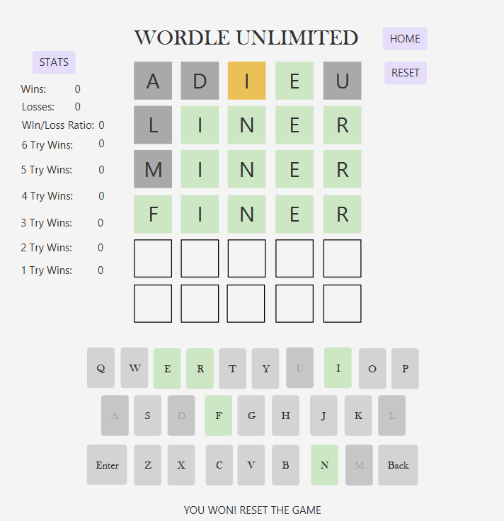
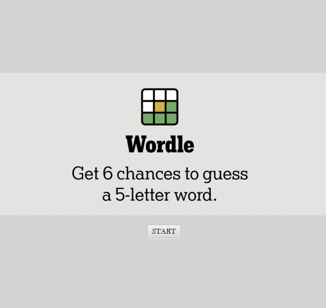

Aggieland Cafe's was a blog made at 2023 HowdyHack which promoted small local coffee businesses
around College Station. We built this website with the intention of helping those businesses flourish!
The website was made with HTML and CSS. Visit my Devpost presentation HERE!
x86 Processor
This x86 processor was made in Logism, a circuit simulation software. We made all 6 stages of a processor including
fetch, decode, execute, memory, write back, and PC update. This definitely gave me hands on insight into the computer architecture
that goes into running assembly code. The ending processor was able to successfully run 11 different simple instructions(push,pop,call, jmp, etc.)
Visit my Github processor file HERE!
Wordle


This Wordle project was created using Javascript and Scenebuilder for the user interface functionality and back end
logic functionality. The randomized words draw from the website of all possible Wordle words. The app also has the ability
to track game statisticss. Visit my Wordle Youtube demo HERE!